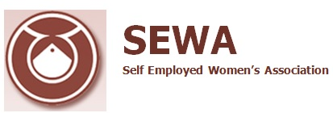
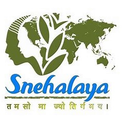
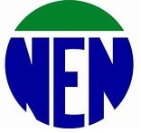
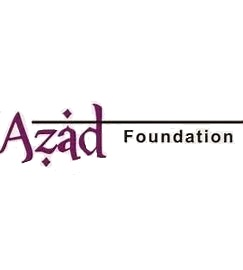
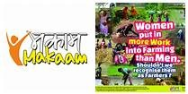

|
|
|
Organizations Fighting For Women Empowerment
|
|
SEWA
Of the female labor force in India, more than 94 percent of workers make their living in
the unorganized sector. Yet this demographic largely remains invisible due to the
self-employed nature of their work. Since these women are not part of the mainstream
salaried workforce, they do not have access to welfare benefits that laborers in the
traditional workforce do, leaving them unprotected. |
 |
|  |
Snehalaya
Snehalaya translates to “home of love” and is an NGO that was founded in 1989 in the
Indian city of Ahmednagar. The NGO provides support to women, children and LGBT
communities. Snehalaya specifically focuses on these
vulnerable members of society
that have suffered at the hands of HIV and AIDS, trafficking, sexual violence and
poverty. |
|
NEN: North East Network
NEN is a women’s rights organization that was established in 1995 as part of the Beijing World Conference on Women. NEN operates mostly in North East India and focuses on women’s human rights and gender justice. NEN organizes training sessions, awareness programs, retreats, as well as short film and art competitions all with the goal of merging advocacy with activism. The organization continues to fight against gender-based discrimination while building support for government policies that promote women’s rights and increase female representation in political, public and community settings. |
 |
|  |
Azad Foundation
The Azad Foundation is a professional feminist organization founded in 2008 that
specifically works with resource-poor women living in urban areas in India. The
Foundation provides opportunities for disadvantaged women to earn a livelihood as
professional drivers and has trained hundreds of women since inception. The
Foundation also trained and then employed the first ever female bus driver in
Delhi. |
|
MAKAAM
Mahila Kisan Adhikaar Manch: MAKAAM is a forum for female farmers’ rights that operates in 24 states in India. Even though women make up about 60 to 70 percent of the farming workforce in India, they only account for around 12 percent of landholdings. Since female farmers rarely own the land they work on, they are excluded from important support services provided by the government. However, MAKAAM seeks to empower female farmers by teaching them to assert their rights and gain ownership of their livelihoods and the natural resources that come with it. |
 |